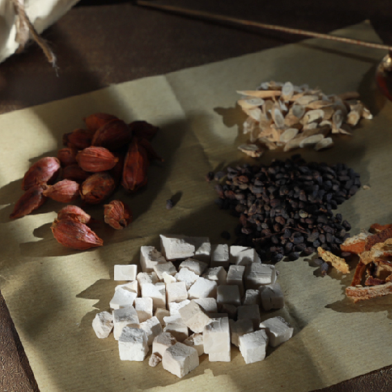
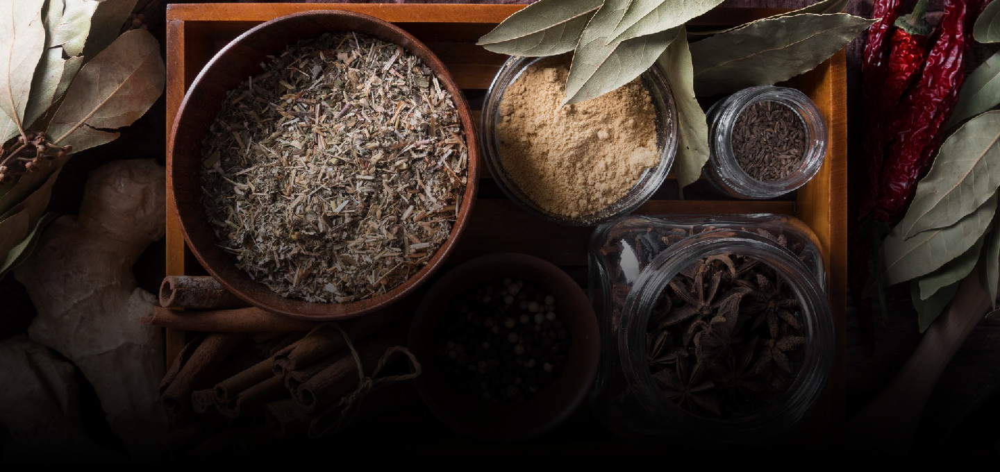
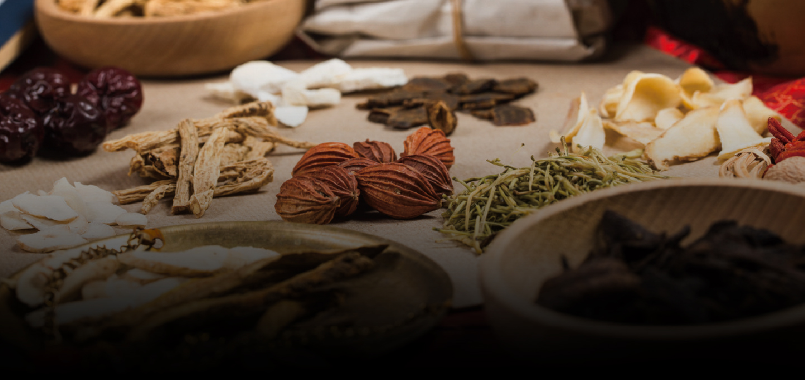

Our Beginning
Korea is a land blessed by nature, with four distinct seasons throughout the year, seas surrounding three sides of the peninsula, and mountains covering more than 70% of its territory. For thousands of years, this unique environment has provided ideal conditions for the growth of valuable medicinal herbs and natural ingredients.
At Taegeuksagye, our journey begins with a deep appreciation for these precious gifts of nature. We believe that the finest products start with exceptional ingredients, carefully nurtured by Korea’s rich natural environment. By honoring the authenticity and value of these native resources, we strive to preserve the wisdom of traditional herbal medicine while sharing its benefits with people around the world.
-

A Symbol of Nature’s Cycle
and Holistic Well-BeingTaegeuksagye is a wellness lifestyle brand inspired by
Taegeuk and the four seasons (Sagye), two enduring
symbols deeply rooted in Korean philosophy. Just as
the seasons continuously cycle through renewal and
balance, we believe the human body also thrives
when harmony is maintained. -
The Spirit of the Taegeukgi
Surrounding the Taegeuk are the four trigrams—
Geon, Gon, Gam, and Ri—which symbolize heaven,
earth, water, and fire. Together, they also represent
the four seasons, the cardinal directions, and the
virtues of humanity, righteousness, propriety,
and wisdom.
-

01 The Most Korean Is
the Most GlobalInspired by the spirit and philosophy embodied in the Taegeukgi, Taegeuksagye transforms nature’s gifts into products that promote health and well-being. We believe that Korea’s unique heritage, traditions, and natural resources hold universal value that can be shared with the world.
-

02 A Story Rooted in Nature and TraditionThe excellence of traditional ingredients begins in the earth and is refined through human care and expertise. From cultivation in Korea’s rich natural environment to careful selection and processing, every step reflects a commitment to preserving the authentic value of nature and herbal tradition.
-
03 B2B Partnership
Turning Your Ideas into Reality with Premium Ingredients and Dedicated Craftsmanship